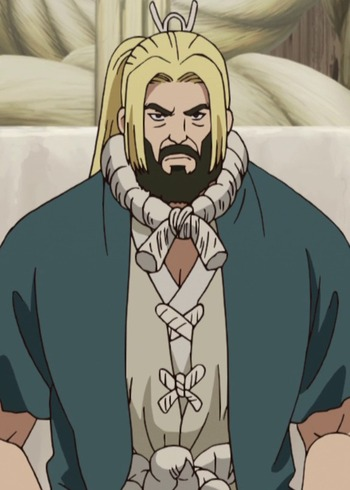

Tetsuo Kanao is a Japanese actor and voice actor. He is affiliated with Theatre Company Subaru.
- Gender: Male
- Birthday: September 25, 1950
- Hometown: Tokyo, Japan
| |
Tetsuo Kanao is a Japanese actor and voice actor. He is affiliated with Theatre Company Subaru.
|
|---|
 |
Doyle Barrett | Scrapped Princess | Doyle Barrett is a doctor in a secluded forest area. He used to be the head of the Amber Knights. He is strict and serious person. |
|  | Kokuyou | Dr. Stone | Kokuyou id the father of Kohaku and Ruri, and the previous chief of Ishigami Village. He is a harsh man who disown his daughter for constantly going aganist him. He cares for his daughter Ruri when she was sick. He is wary of outsiders. |
Go Back to Main Page |
Go Back to Homepage |
|
|
|
OR |
|